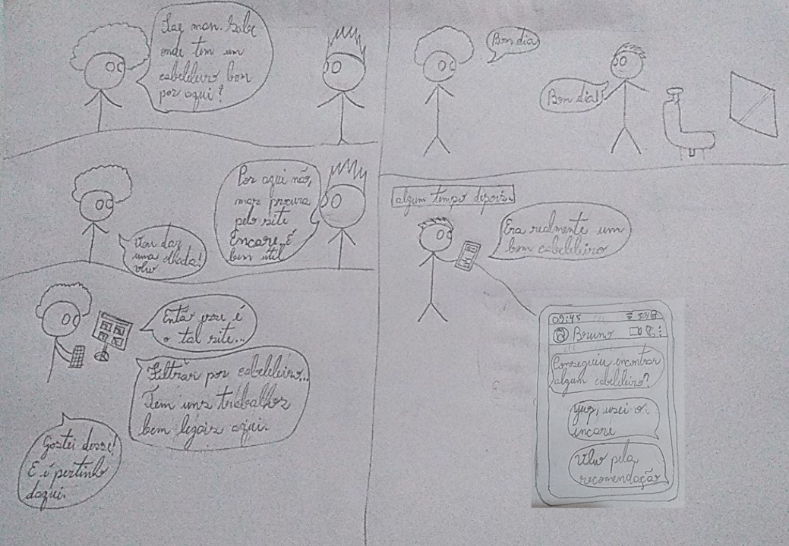
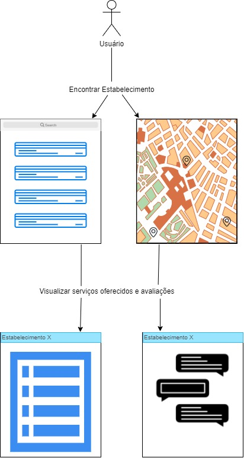

Desing Sprint
Geração de ideias
Afim de gerar as ideias de como seria a aplicação, a equipe realizou uma reunião onde usamos a técnica de brainstorming, após isso cada membro teve que gerar o seu próprio esboço para validar as ideias discutidas.
Esboço das ideias
Os esboços são representações de uma sessão de brainstorming realizada pela equipe, de forma assíncrona, onde todos apresentaram suas ideias de como o Encare deve ser. Os documentos a seguir são feitos em formato livre, sem compromisso com o estilo específico, haja visto que o propósito da atividade era capturar as ideias da equipe de forma crua.
Após o processo dessa captura de ideias, nós selecionamos uma delas para guiar o processo de prototipagem do projeto Encare. A decisão está descritaabaixo dos esboços.
João Pedro

Wagner Martins

Renato Britto

João Baraky

Hugo Aragão

Gustavo Nogueira

Nícalo Ribeiro

Decisão
Foi feita de decisão de se selecionar o esboço de João Baraky, visto que este captura a essência do que o Encare deve ser. Boa parte da ideia será usada, mas algumas mudanças foram feitas para alinhar com o resto do time.
Divergências do esboço
Foi feita a decisão de abandonar o feature representado no esboço selecionado relacionado aos preços de cada estabelecimento. No esboço é possível ver um feature semelhante ao iFood, onde os preços de um estabelecimento são representados com cifrões ($).
A ideia foi abandonada pois se julgou que fosse um dado difícil de se procurar, e caso houvesse continuidade nessa ideia, teríamos que não apenas coletar esses dados manualmente para cada estabelecimento mas também usar juízos de valor para definir em qual das 5 categorias de preço um dado estabelecimento pertence.
Protótipo
O protótipo de baixa fidelidade foi produzido a partir dos artefatos gerados, onde pudemos revisar os elementos acordados da aplicação e geramos a versão final da ideia prototipada.
 *Figura 1. Feed inicial*  *Figura 2. Filtragem de Opções*  *Figura 3. Perfil do estabelecimento*
Versionamento
| Data | Nome | Versão | Descrição |
|---|---|---|---|
| 16/02/2021 | João Pedro Silva de Carvalho | 0.1 | Adicionando Esboço |
| 17/02/2021 | Wagner Martins da Cunha | 0.2 | Adicionando storyboard |
| 17/02/2021 | Renato Britto Araujo | 0.3 | Adicionando Esboço |
| 17/02/2021 | João Luis Baraky | 0.4 | Adicionando Esboço |
| 18/02/2021 | Hugo Aragão | 0.5 | Adicionando Esboço |
| 19/02/2021 | Nícalo Ribeiro | 0.6 | Adicionando Esboço |
| 19/02/2021 | Gustavo Nogueira | 0.7 | Adicionando Esboço |
| 19/02/2021 | Hugo, João Pedro, Renato | 0.8 | Adicionando Prototipo de Baixa Fidelidade |
| 19/02/2021 | Renato Britto Araujo | 0.9 | Adiciona decisão, explicação das mudanças dela, esboço e geração de ideias. |
| 19/02/2021 | João Pedro Silva de Carvalho | 1.0 | Adiciona geração de ideias |
| 27/02/2021 | João Luis Baraky | 1.1 | Corrige erros de ortografia e concordância |